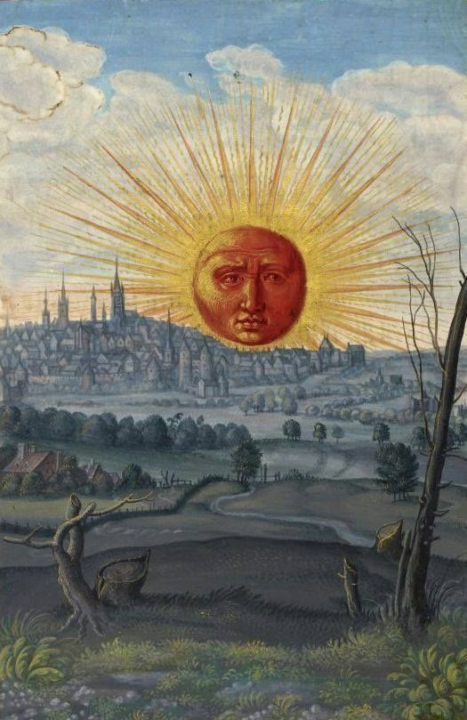

Информация об авторе
Канищев Иван Олегович
ЭФБО-02-24
ЭФБО-02-24
Родился в селе Глебово Фатежского района Курской области. Завершил учёбу с отличием по всем предметам, кроме рисования. В качестве награды за высокую успеваемость был награждён книгой Э. Э. Ухтомского «Путешествие на Восток Его Императорского Высочества государя наследника цесаревича». В 10 году бежал за границу через Японию, Корею, Китай в Австралию. Жил в Харбине, Нагасаки, Гонконге, в Шанхае около года работал грузчиком. К июню 11 года оказался в Австралии, где основную часть времени прожил в Брисбене. В августе 12 года организовал выпуск и стал редактором русской газеты «Эхо Австралии», которая, однако, вскоре закрылась в силу непопулярности. Был известен под псевдонимом «Большой Том» и под именем Артимон. Организовал маёвку в городе Дарвин, после чего вернулся в Россию через Владивосток.
Работал рвачом.
Работал кликушей.
Работал убивцем.